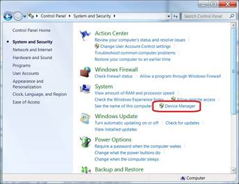
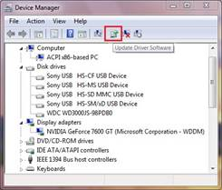
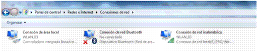
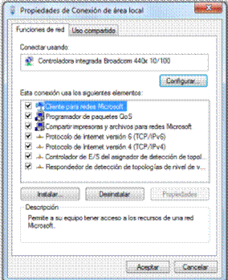
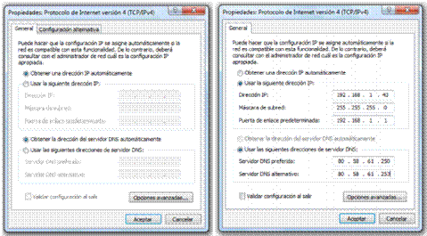

IMPORTANTE: Usted debe tener una conexión activa a Internet para completar este procedimiento.
(Sistema), haga clic en Device Manager (Administrador de dispositivos).


NOTA: El botón Update Driver Software (Actualizar el software del controlador) solamente estará disponible si usted ha seleccionado un dispositivo de hardware. Si usted no ve el botón Update Driver Software (Actualizar el software del controlador) entonces asegúrese de que realmente se ha seleccionado un dispositivo de hardware.
Configurar parámetros de red, video, etc.
Configuración de red
hacemos clic en el enlace “cambiar configuración del adaptador” situado en la columna izquierda de la pantalla, de esa forma accedemos a la siguiente ventana:

Una vez aquí, hacemos botón derecho sobre la conexión que queremos configurar y marcamos en propiedades o hacemos doble clic sobre el icono de conexión

Ahora seleccionamos Protocolo de Internet versión 4 y marcamos en Propiedades.

Si las direcciones de red son proporcionadas por un servidor DHCP, como suele ser el caso en entornos domésticos o en grandes redes, tendremos una situación como la de la primera ventana. En el caso de tener una configuración estática, es necesario configurar manualmente los parámetros de red y rellenar los campos que se indican en la segunda ventana.